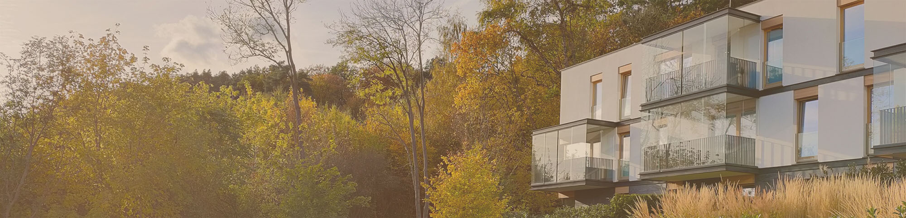

<mat-toolbar class="toolbar mat-elevation-z2">
  <!-- <button mat-icon-button aria-label="Example icon-button with menu icon">
    <mat-icon>menu</mat-icon>
  </button> -->
  <span>NK</span>
  <span class="example-spacer"></span>

  <span class="toolbar_link_label">Aktualności</span>
  <span class="toolbar_link_label">Komunikaty</span>
  <span class="toolbar_link_label">Awarie</span>
  <span class="toolbar_link_label">Dyskusje</span>
  <span class="toolbar_link_label">Dokumenty</span>

  <button mat-icon-button color="accent"
    [matMenuTriggerFor]="userMenu" aria-label="..">
    <mat-icon>person</mat-icon>
  </button>
</mat-toolbar>

<mat-menu #userMenu="matMenu">
  <button mat-menu-item><mat-icon>settings</mat-icon>Ustawienia profilu</button>
  <button mat-menu-item><mat-icon>logout</mat-icon>Wyloguj</button>
</mat-menu>

<div class="image-bg">
  <!--  -->
</div>

<router-outlet></router-outlet>
